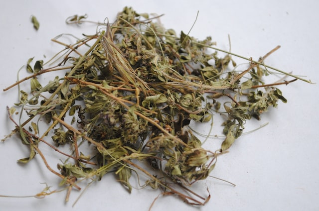

Description
These vibrant, savory muffins are ideal for tiny hands.
The sweetness comes from beets and carrot, so no bad additives are required!
Ingredients
- 55 g/2 oz unsalted butter, melted, plus extra for greasing
- 140 g/5 oz plain flour
- ¼ teaspoon bicarbonate of soda
- 1 teaspoon baking powder
- 1 large egg, lightly beaten
- 150 ml/¼ pint natural yogurt
- 30 g/1 oz feta cheese, grated

- 1 small carrot, peeled + grated
- 100 g/3½ oz cooked beetroot (not in vinegar), patted dry + grated
- 1 tablespoon finely chopped thyme leaves 
Steps
- Preheat the oven to 190°C/375°F/Gas Mark 5 and set aside. Grease the 20 holes in one or two mini-muffin pans.
- Combine the flour, baking soda, and baking powder into a large mixing basin and whisk until blended, then form a well in the center.
- In a mixing bowl, combine the egg, yogurt, and melted butter, then gradually pour into the dry ingredients, followed by the feta, carrot, beetroot, and thyme. Stir together gently but thoroughly with a wooden spoon until just mixed.
- Divide the mixture evenly among the prepared muffin holes, then bake in the oven for 15 to 20 minutes until risen. Leave to cool slightly, then cool completely on a wire rack.